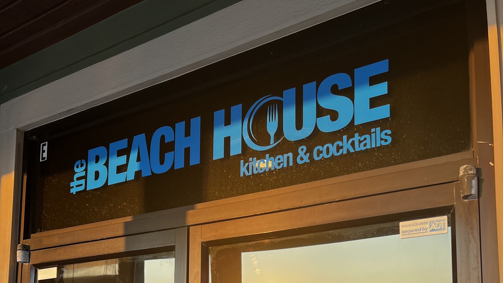

The Beach House Kitchen and Cocktails
Gulf seafood and cocktails on West Beach Boulevard in Gulf Shores, with porch seating and takeout.
Photo of The Beach House Kitchen and Cocktails from its Google listing.
About the restaurant
The Beach House Kitchen and Cocktails is a Gulf seafood restaurant and cocktail bar at 1154 W Beach Blvd Suite 6200 in Gulf Shores. The menu covers Gulf shrimp and fish tacos, crawfish mac and cheese, coconut shrimp, and burgers, with signature cocktails including the Bushwacker. Happy hour runs daily from 2:00 PM to 6:00 PM. Porch and outdoor seating is available, takeout is offered, and a gluten-free menu is available.
Menu
Gallery


All gallery photos are stock photos, labeled as such. They show the kind of food described on this page, not this business.
Visit The Beach House
1154 W Beach Blvd Suite 6200, Gulf Shores, AL 36542. Open daily, 11:00 AM to 10:00 PM.
Call +1 251-948-2431 Get directions on Google Maps
Questions? Call +1 251-948-2431.